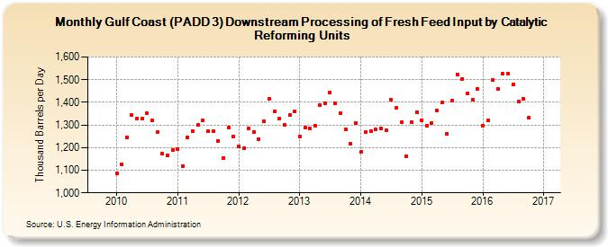

|
Download Data (XLS File) |
|
||||||||
|  | ||||||||
| Gulf Coast (PADD 3) Downstream Processing of Fresh Feed Input by Catalytic Reforming Units (Thousand Barrels per Day) | ||||||||
| Year | Jan | Feb | Mar | Apr | May | Jun | Jul | Aug | Sep | Oct | Nov | Dec |
|---|---|---|---|---|---|---|---|---|---|---|---|---|
| 2010 | 1,086 | 1,126 | 1,244 | 1,343 | 1,327 | 1,327 | 1,350 | 1,319 | 1,267 | 1,172 | 1,166 | 1,189 |
| 2011 | 1,193 | 1,118 | 1,246 | 1,273 | 1,299 | 1,321 | 1,271 | 1,271 | 1,230 | 1,155 | 1,287 | 1,250 |
| 2012 | 1,206 | 1,199 | 1,284 | 1,269 | 1,237 | 1,315 | 1,416 | 1,358 | 1,329 | 1,300 | 1,344 | 1,360 |
| 2013 | 1,247 | 1,287 | 1,285 | 1,298 | 1,387 | 1,396 | 1,445 | 1,394 | 1,352 | 1,279 | 1,216 | 1,309 |
| 2014 | 1,180 | 1,269 | 1,271 | 1,279 | 1,284 | 1,275 | 1,411 | 1,374 | 1,311 | 1,162 | 1,311 | 1,357 |
| 2015 | 1,320 | 1,296 | 1,310 | 1,363 | 1,398 | 1,262 | 1,408 | 1,523 | 1,504 | 1,439 | 1,410 | 1,461 |
| 2016 | 1,298 | 1,321 | 1,497 | 1,461 | 1,525 | 1,528 | 1,480 | 1,402 | 1,414 | 1,333 | 1,407 | |
| - = No Data Reported; -- = Not Applicable; NA = Not Available; W = Withheld to avoid disclosure of individual company data. |
| Release Date: 1/31/2017 |
| Next Release Date: 2/28/2017 |